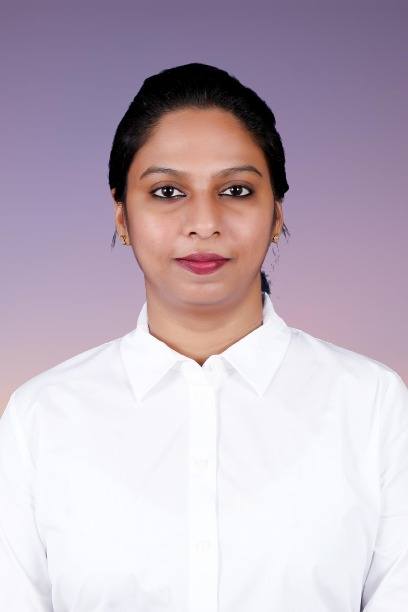

Monica Sharon Mettu

Summary
I am a Civil Engineer by Profession. I work for the Irrigation Department
of the State of Telangana, India as an Assistant Executive Engineer. I am
a hardworking and dedicated individual currently learning Web Development
on Udemy.
Education
- Bachelors Degree, Civil Engineering, JNTU, Hyderabad (2009-2013)
- Masters Degree, Transportation Engineer, VNIT, Nagpur (2013-2015)
Work Experience
Assistant Professor - CVR College of Engineering
July-2015 to March-2016
-
Taught Undergraduate Students Surveying and Transportation
Engineering.
- Guided students in their final year project.
-
Assistant Executive Engineer - Irrigation Department, Government of
Telangana
April-2016 to present
- Checking Designs of Irrigation CD & CM Structures
- Preparing and submitting estimates of Irrigation structures
-
Calling Tenders for works, Bid Evaluation and Awarding works to
successful bidders
- Preparing and submitting work progress reports
-
Managing the social media account of the lakes department of GHMC
- Checking and passing the bills submitted by conatrctors
-
Analysing the proposals sent by corporate companies for lake adoption
and securing approvals from higher authorities.
- Disposing the applications for NOC by citizens.
- Attending to office correspondence.
Skills
- Microsoft Office: ⭐⭐⭐⭐
- Autocad: ⭐⭐⭐⭐
- Organizational Skills: ⭐⭐⭐⭐
- Research and Reporting : ⭐⭐⭐⭐
Awards and Recognitions
- Award for being the class topper in Xth Standard.
-
Institute medal for securing highest GPA in the batch of 2015 of M.Tech,
Transportation Engineering in VNIT, Nagpur.
Others